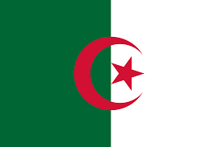
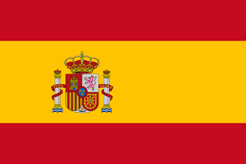

About Me
Hi there! My name is Yann Lounici I'm a first year BBA student at ESSEC. Here's a little about me:
I was born in Paris and lived most of my life all around the Parisian suburb area. I come from an Algerian family so i grew up speaking 2 languages at home. Even though I lived most of my life in France I lived my last 2 years of highschool in the south of Spain and I believe it truly helped me become more open minded and to discover a new culture. I'm eager to learn about new things all the time and can sometimes get carried away.
Languages I Speak
-
 French
French -  Arabic
 English
English- Spanish
My Hobbies
-
Football

Reading